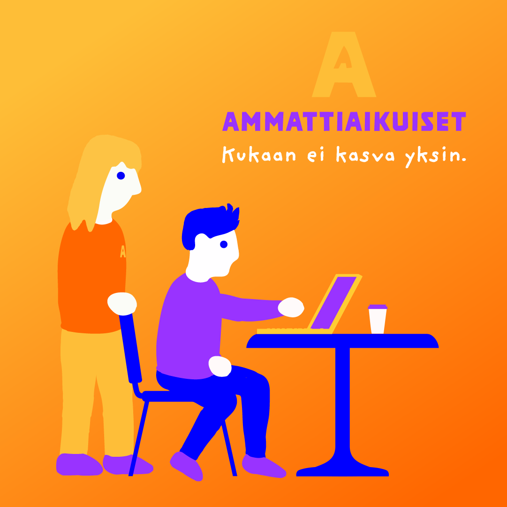
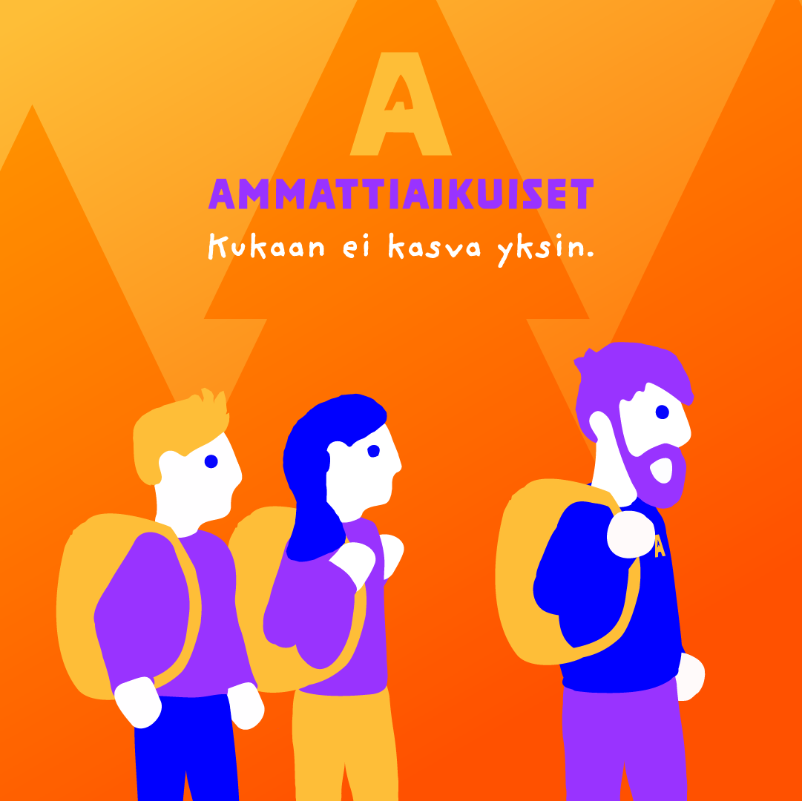
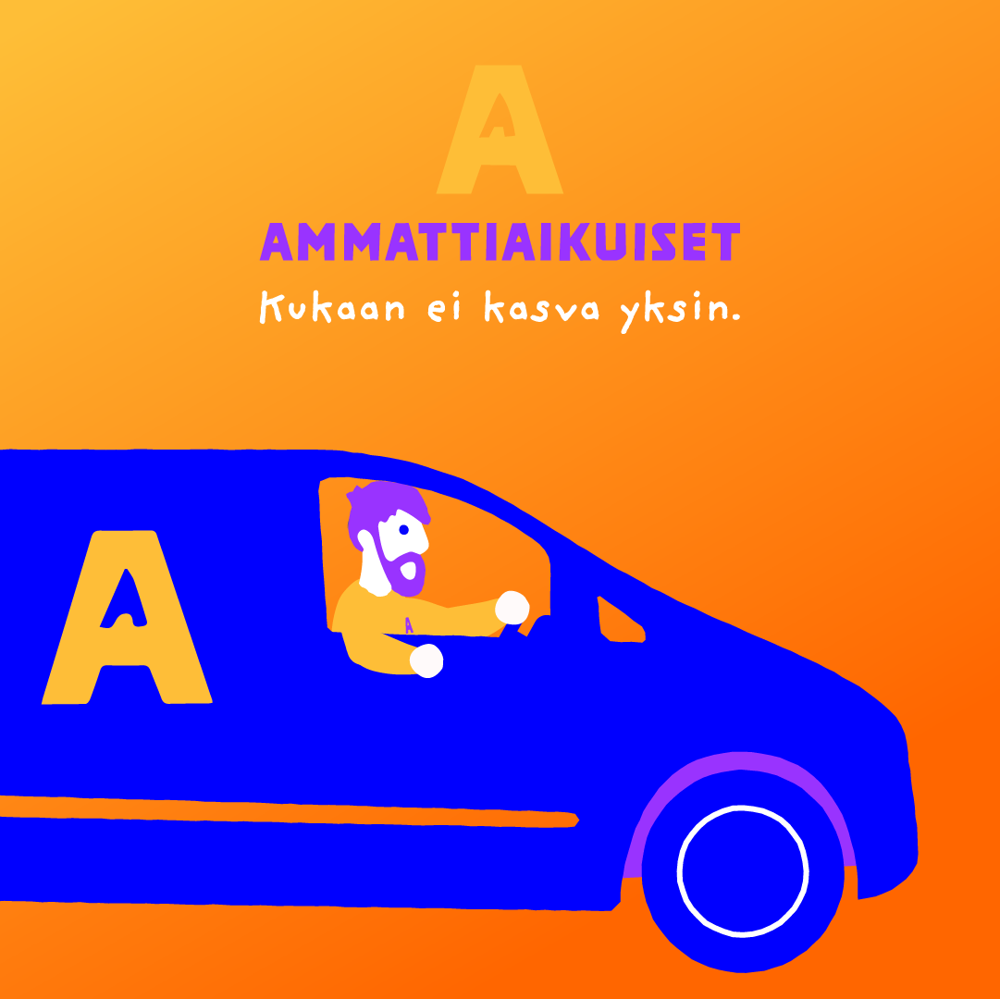
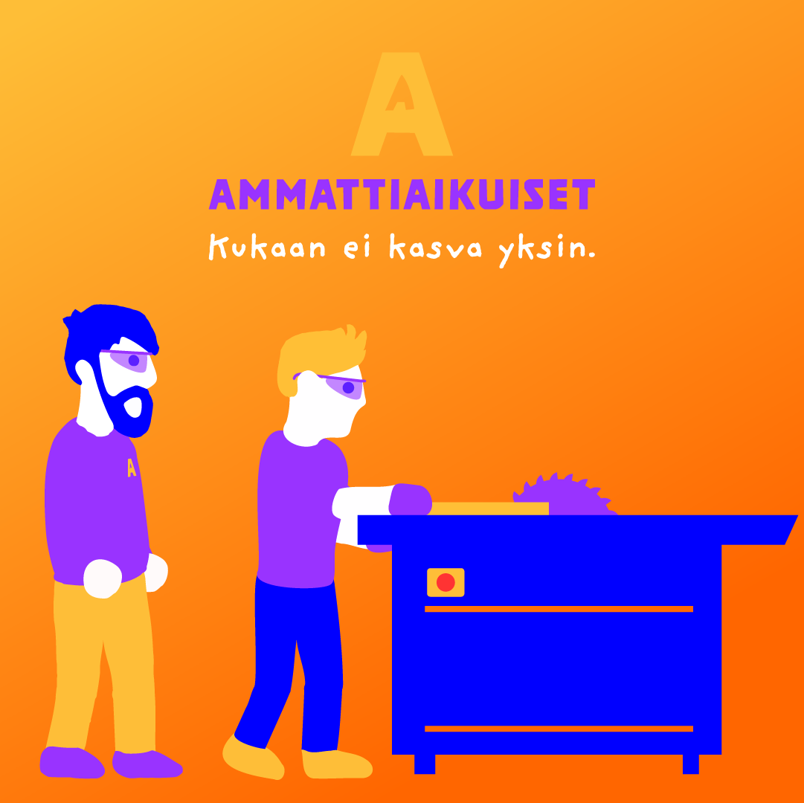
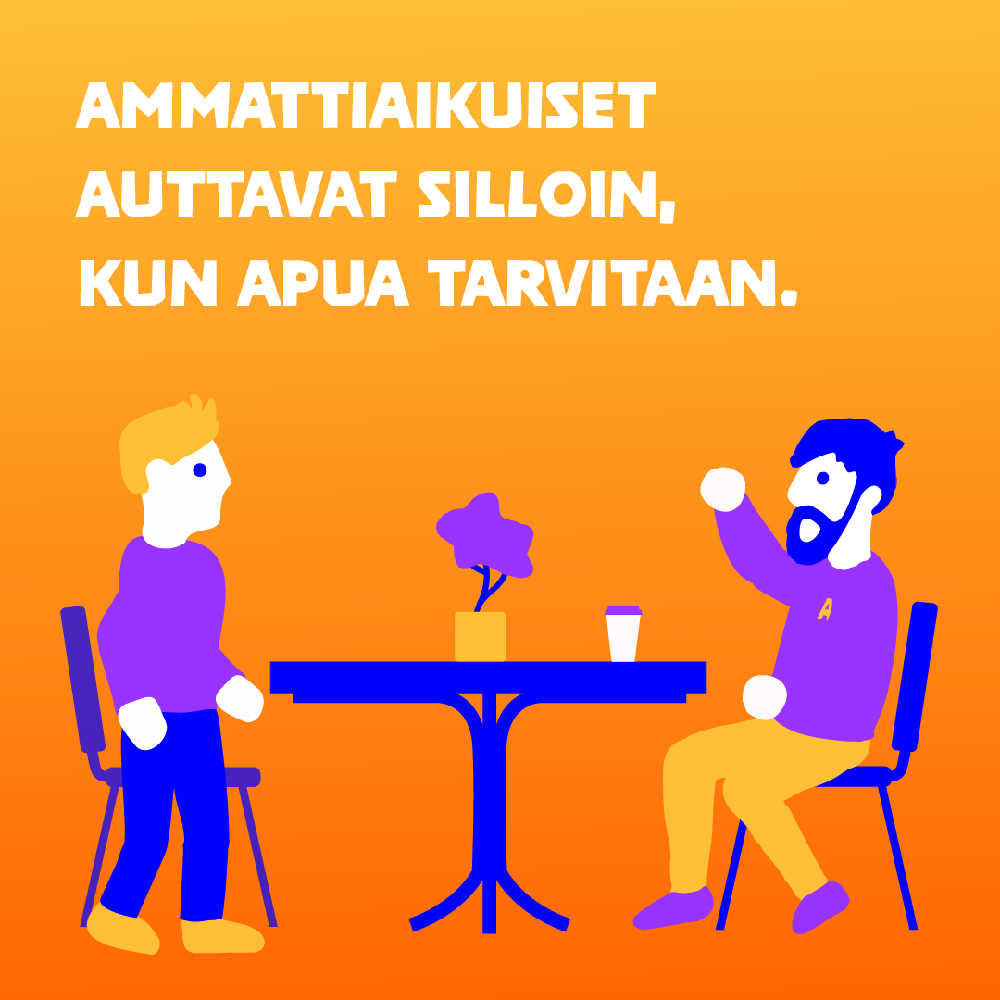
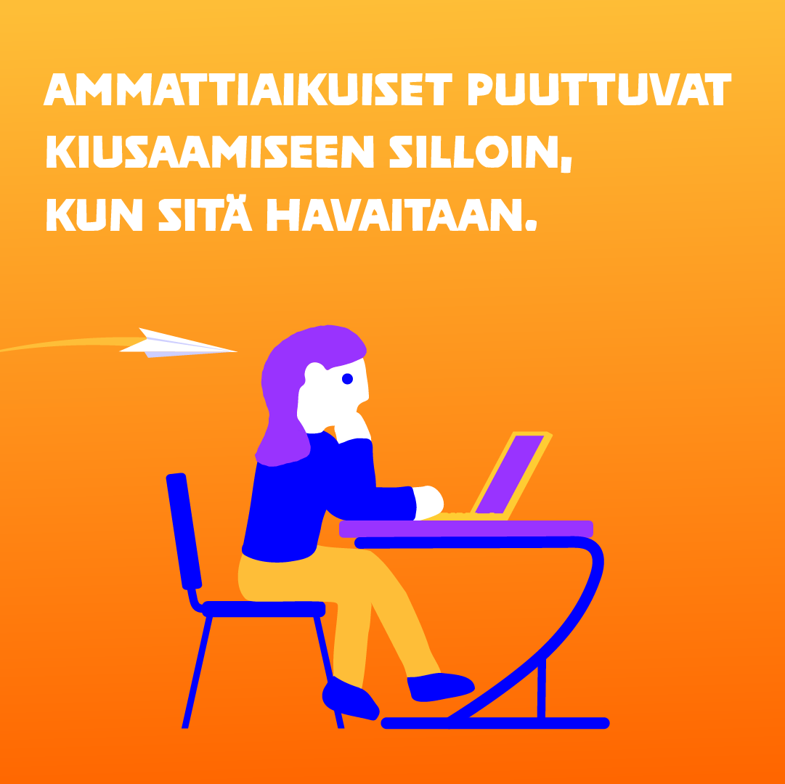

Amaattiaikuiset campaign
I created social media illustrations for a campaign focused on enlightening people on the importance of professional youth-work. The client requested illustrated images in a similar style as they had recieved previous years from an ad-agency and also some images based on photographs.
I also created a poster for events and a PDF guide on how to take part in the campaign
Illustrated Images






Images based on photographs


Poster
Poster displayed at live-events and conventions directing people to a light-hearted online test to see if they could be a professional youth-worker